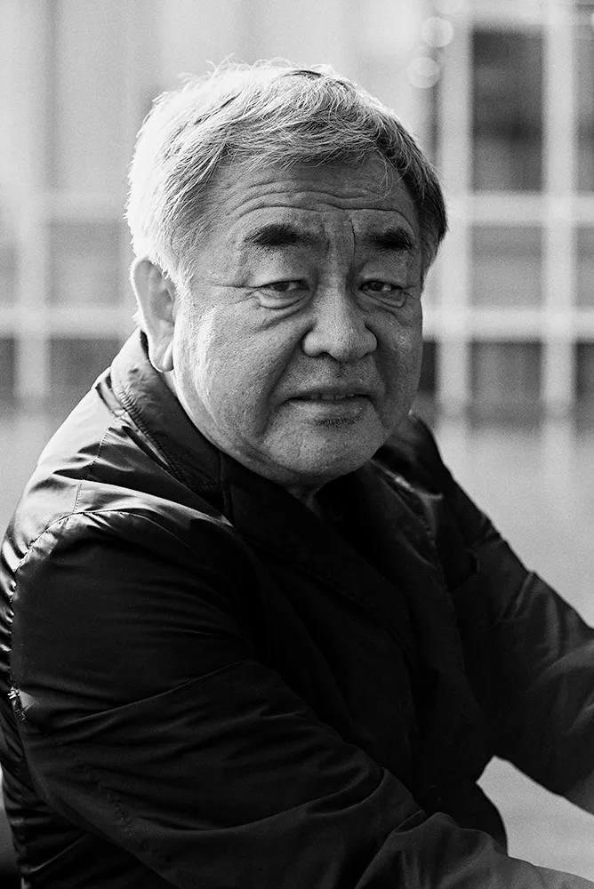

Kengo Kuma is a Japanese architect renowned for his minimalist and nature-inspired designs, often incorporating wood and traditional craftsmanship. His work blends contemporary architecture with traditional Japanese aesthetics, emphasizing lightness, transparency, and harmony with the environment. Kuma seeks to create structures that dissolve into their surroundings rather than dominate them.


Located in Sydney’s Darling Square, The Exchange is a striking multi-use building wrapped in a swirling timber façade, showcasing Kengo Kuma’s signature use of natural materials. The six-story structure houses a library, market hall, childcare center, and restaurants, creating a vibrant community hub. The dynamic, layered design evokes movement and blends harmoniously with its surroundings while maintaining a strong architectural presence.

Situated near Tokyo’s iconic Senso-ji Temple, the Asakusa Culture Tourist Information Center is a distinctive, vertically stacked building that embodies Kuma’s philosophy of blending tradition with modernity. The center’s slanted, layered roof design echoes traditional Japanese architecture, while the extensive use of wood provides warmth and texture. It serves as a key resource for visitors, housing information counters, exhibition spaces, and an observation deck with panoramic city views.